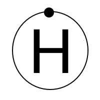

Diagraphic is About Programming
At the end of the day, we are all here because we love to program. Whether it is complex, multi-tiered professional projects or small scripts to automate life, it has a place at Diagraphic. We encourage our developers to code and build whatever interests them - whether it is game development or social media. Below, you can find some passion projects and works-in-progress that our developers are working on in their spare time.
At the end of the day, we are all here because we love to program. Whether it is complex, multi-tiered professional projects or small scripts to automate life, it has a place at Diagraphic. We encourage our developers to code and build whatever interests them - whether it is game development or social media. Below, you can find some passion projects and works-in-progress that our developers are working on in their spare time.
-
Mumblr
HackRU 2015 -
Defend The Lounge!
HackNY 2015 -
Rumblr
DevFest 2015 -
PTable
Chemistry 2014 -
Cumulus
2014-2015
Mumblr
Mumblr is an orator's best friend - or worst nightmare. An app designed to teach public speaking, Mumblr uses a combination of natural language processing, Google Speech API voice recognition, and classical conditioning to teach individuals to stop relying on their crutch words while they speak. The app takes in user voice commands, checks against thousands of n-grams to give context to words, and then decides if the words are used correctly. If not, Mumblr will yell at the user - once per mistake. User's have the option to customize which words the app is looking for, to tailor it to their needs. Mumblr was the winner of "Best Use of a Google API" at Hack Rutgers Spring 2015. Though it is unlikely to continue being updated, it is currently up and linked above. Mumblr works best with a strong microphone and a fast internet connection (for the voice analysis, which is done over Google servers). Not all features currently online.Project Team: Adrian Garza, Amol Kapoor, Tyler Im, Amy Tong

Defend the Lounge
Defend the Lounge is a top-down 2d gratuitous violence simulator. Players navigate through a retro-inspired pixel art rendering of a dorm lounge at Columbia in an attempt to fight an ever-increasing army of Ganesh clones. When players come in contact with a Ganesh, they lose health. But if they manage to slay all of the villains in the round, they advance on to the next. After each successful bout, the game displays the scoreboard along with a random gif tagged "victory", thanks to the Giphy API. Defend the Lounge allows users to see their ultimate high scores. The game also features food powerups in the form of chicken tenders to restore health. How long will you be able to survive the scourge?Project Team: Adrian Garza, Amol Kapoor, Ganesh Ravichandran, Sophie Stadler
Rumblr
It originated from a discussion between friends. A bunch of freshmen, glued to their cell phones, their Smash 4 competitions on Wii, and their friendly swordfights in the hallway. This camaraderie, combined with a fierce competitive edge, could only lead to one thing: "What about Tinder, but for fighting?" Rumblr is a Google-integrated social competition service. Mature users age 18 and up simply connect their Google accounts to experience competition on a whole new level. Presently, the service allows users to connect with those in their immediate area, and then flip, Tinder-style, through profiles of those around them, and decide to Rumble them in the competition of their choice. Eventually, challengers will be able to define tags for types of Rumbles, which could be anything from video games to fistfights. This is currently a work in progress. Follow along at rumblr.diagraphictech.com.Project Team: Josh Bartlett, Nikhil Dominic, Adrian Garza, Amol Kapoor, Tyler Im, Michele Lin, Ganesh Ravichandran, David Smart, Sophie Stadler
